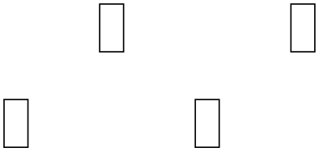
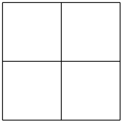
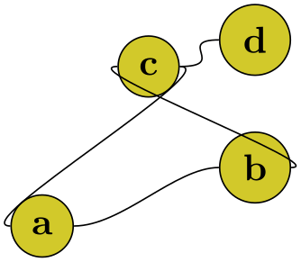
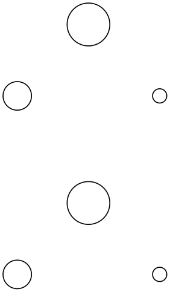
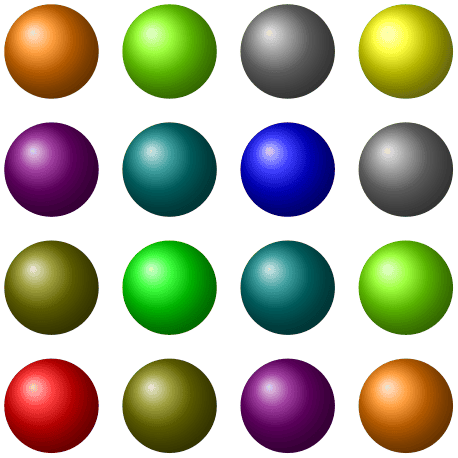
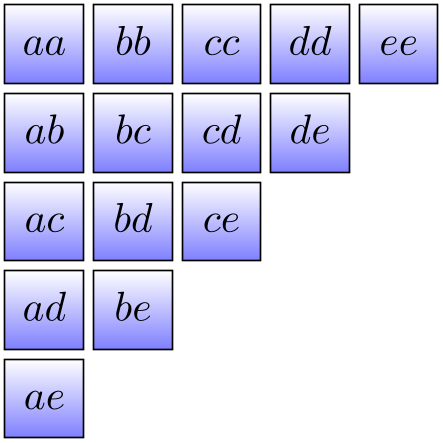
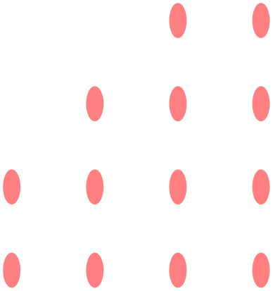

The TikZ and PGF Packages
Manual for version 3.1.10
Utilities
88 Repeating Things: The Foreach Statement¶
This section describes the package pgffor, which is loaded automatically by TikZ, but not by pgf:
-
\usepackage{pgffor} % LaTeX ¶
-
\input pgffor.tex % plain TeX
-
\usemodule[pgffor] % ConTeXt
This package can be used independently of pgf, but works particularly well together with pgf and TikZ. It defines two new commands: \foreach and \breakforeach.
-
\foreach ⟨variables⟩ [⟨options⟩] in ⟨list⟩ ⟨commands⟩ ¶
-
/pgf/foreach/var=⟨variable⟩(no default) ¶
-
/pgf/foreach/evaluate=⟨variable⟩ as ⟨macro⟩ using ⟨formula⟩(no default) ¶
-
/pgf/foreach/remember=⟨variable⟩ as ⟨macro⟩ (initially ⟨value⟩)(no default) ¶
-
/pgf/foreach/count=⟨macro⟩ from ⟨value⟩(no default) ¶
-
/pgf/foreach/parse={⟨boolean⟩} (default false) ¶
-
/pgf/foreach/expand list={⟨boolean⟩} (default false) ¶
The syntax of this command is a bit complicated, so let us go through it step-by-step.
In the easiest case, ⟨variables⟩ is a single TeX-command like \x or \point. (If you want to have some fun, you can also use active characters. If you do not know what active characters are, you are blessed.)
Still in the easiest case, ⟨options⟩ will be omitted. The keys for customizing this command will be discussed below.
Again, in the easiest case, ⟨list⟩ is either a comma-separated list of values surrounded by curly braces or it is the name of a macro that contain such a list of values. Anything can be used as a value, but numbers are most likely.
Finally, in the easiest case, ⟨commands⟩ is some TeX-text in curly braces.
With all these assumptions, the \foreach statement will execute the ⟨commands⟩ repeatedly, once for every element of the ⟨list⟩. Each time the ⟨commands⟩ are executed, the ⟨variable⟩ will be set to the current value of the list item.
[1][2][3][0]
[1][2][3][0]
Note that in each execution of ⟨commands⟩ the ⟨commands⟩ are put in a TeX group. This means that local changes to counters inside ⟨commands⟩ do not persist till the next iteration. For instance, if you add 1 to a counter inside ⟨commands⟩ locally, then in the next iteration the counter will have the same value it had at the beginning of the first iteration. You have to add \global if you wish changes to persist from iteration to iteration.
Syntax for the commands. Let us move on to a more complicated setting. The first complication occurs when the ⟨commands⟩ are not some text in curly braces. If the \foreach statement does not encounter an opening brace, it will instead scan everything up to the next semicolon and use this as ⟨commands⟩. This is most useful in situations like the following:
However, the “reading till the next semicolon” is not the whole truth. There is another rule: If a \foreach statement is directly followed by another \foreach statement, this second foreach statement is collected as ⟨commands⟩. This allows you to write the following:
The dots notation. The second complication concerns the ⟨list⟩. If this ⟨list⟩ contains the list item “...”, this list item is replaced by the “missing values”. More precisely, the following happens:
Normally, when a list item ... is encountered, there should already have been two list items before it, which were numbers. Examples of numbers are 1, -10, or -0.24. Let us call these numbers \(x\) and \(y\) and let \(d := y-x\) be their difference. Next, there should also be one number following the three dots, let us call this number \(z\).
In this situation, the part of the list reading “\(x\),\(y\),...,\(z\)” is replaced by “\(x\), \(x+d\), \(x+2d\), \(x+3d\), …, \(x+md\)”, where the last dots are semantic dots, not syntactic dots. The value \(m\) is the largest number such that \(x + md \le z\) if \(d\) is positive or such that \(x+md \ge z\) if \(d\) is negative.
Perhaps it is best to explain this by some examples: The following ⟨list⟩ have the same effects:
\foreach \x in {1,2,...,6} {\x, } yields 1, 2, 3, 4, 5, 6,
\foreach \x in {1,2,3,...,6} {\x, } yields 1, 2, 3, 4, 5, 6,
\foreach \x in {1,3,...,11} {\x, } yields 1, 3, 5, 7, 9, 11,
\foreach \x in {1,3,...,10} {\x, } yields 1, 3, 5, 7, 9,
\foreach \x in {0,0.1,...,0.5} {\x, } yields 0, 0.1, 0.20001, 0.30002, 0.40002,
\foreach \x in {a,b,9,8,...,1,2,2.125,...,2.5} {\x, } yields a, b, 9, 8, 7, 6, 5, 4, 3, 2, 1, 2, 2.125, 2.25, 2.375, 2.5,
As can be seen, for fractional steps that are not multiples of \(2^{-n}\) for some small \(n\), rounding errors can occur pretty easily. Thus, in the second last case, 0.5 should probably be replaced by 0.501 for robustness.
There is another special case for the ... statement: If the ... is used right after the first item in the list, that is, if there is an \(x\), but no \(y\), the difference \(d\) obviously cannot be computed and is set to \(1\) if the number \(z\) following the dots is larger than \(x\) and is set to \(-1\) if \(z\) is smaller:
\foreach \x in {1,...,6} {\x, } yields 1, 2, 3, 4, 5, 6,
\foreach \x in {9,...,3.5} {\x, } yields 9, 8, 7, 6, 5, 4,
There is a yet another special case for the ... statement, in that it can indicate an alphabetic character sequence:
\foreach \x in {a,...,m} {\x, } yields a, b, c, d, e, f, g, h, i, j, k, l, m,
\foreach \x in {Z,X,...,M} {\x, } yields Z, X, V, T, R, P, N,
A final special case for the ... statement is contextual replacement. If the ... is used in some context, for example, sin(...), this context will be interpreted correctly, provided that the list items prior to the ... statement have exactly the same pattern, except that, instead of dots, they have a number or a character:
\foreach \x in {2^1,2^...,2^7} {$\x$, } yields
\foreach \x in {0\pi,0.5\pi,...\pi,3\pi} {$\x$, } yields
\foreach \x in {A_1,..._1,H_1} {$\x$, } yields
Special handling of pairs. Different list items are separated by commas. However, this causes a problem when the list items contain commas themselves as pairs like (0,1) do. In this case, you should put the items containing commas in braces as in {(0,1)}. However, since pairs are such a natural and useful case, they get a special treatment by the \foreach statement. When a list item starts with a ( everything up to the next ) is made part of the item. Thus, we can write things like the following:

Using the foreach-statement inside paths. TikZ allows you to use foreach and \foreach (both have the same effect) inside a path construction. In such a case, the ⟨commands⟩ must be path construction commands. Here are two examples:

Note that the node and pic path commands also support the foreach statement in special ways.
Multiple variables. You will often wish to iterate over two variables at the same time. Since you can nest \foreach loops, this is normally straight-forward. However, you sometimes wish variables to iterate “simultaneously”. For example, we might be given a list of edges that connect two coordinates and might wish to iterate over these edges. While doing so, we would like the source and target of the edges to be set to two different variables.
To achieve this, you can use the following syntax: The ⟨variables⟩ may not only be a single TeX-variable. Instead, it can also be a list of variables separated by slashes (/). In this case the list items can also be lists of values separated by slashes.
Assuming that the ⟨variables⟩ and the list items are lists of values, each time the ⟨commands⟩ are executed, each of the variables in ⟨variables⟩ is set to one part of the list making up the current list item. Here is an example to clarify this:
Example: \foreach \x / \y in {1/2,a/b} {``\x\ and \y''} yields “1 and 2”“a and b”.
If some entry in the ⟨list⟩ does not have “enough” slashes, the last entry will be repeated. Here is an example:
\begin{tikzpicture}
\foreach \x/\xtext in
{0,...,3,2.72
/
e}
\draw (\x,0) node{$\xtext$};
\end{tikzpicture}
Here are more useful examples:

\begin{tikzpicture}
% Define some coordinates:
\path[nodes={circle,fill=yellow!80!black,draw}]
(0,0) node(a) {a}
(2,0.55) node(b) {b}
(1,1.5) node(c) {c}
(2,1.75) node(d) {d};
% Draw some connections:
\foreach \source/\target in
{a/b, b/c, c/a, c/d}
\draw (\source) .. controls
+(.75cm,0pt) and
+(-.75cm,0pt)..(\target);
\end{tikzpicture}

\begin{tikzpicture}[line cap=round,line width=3pt]
\filldraw [fill=yellow!80!black] (0,0) circle
(2cm);
\foreach \angle /
\label in
{0/3, 30/2, 60/1, 90/12, 120/11, 150/10, 180/9,
210/8, 240/7, 270/6, 300/5, 330/4}
{
\draw[line width=1pt] (\angle:1.8cm) --
(\angle:2cm);
\draw (\angle:1.4cm) node{\textsf{\label}};
}
\foreach \angle in
{0,90,180,270}
\draw[line width=2pt] (\angle:1.6cm) --
(\angle:2cm);
\draw (0,0) --
(120:0.8cm); % hour
\draw (0,0) --
(90:1cm); % minute
\end{tikzpicture}%

Options to customize the foreach-statement.
The keys described below can be used in the ⟨options⟩ argument to the \foreach command. They all have the path /pgf/foreach/, however, the path is set automatically when ⟨options⟩ are parsed, so it does not have to be explicitly stated.
This key provides an alternative way to specify variables: \foreach [var=\x,var=\y] is the same as \foreach \x/\y. If used, this key should be used before the other keys.
By default, list items are not evaluated: 1+2, yields 1+2, not 3. This key allows a variable to be evaluated using the mathematical engine. The variable must have been specified either using the var key or in the ⟨variables⟩ argument of the foreach command. By default, the result of the evaluation will be stored in ⟨variable⟩. However, the optional as ⟨macro⟩ statement can be used to store the result in ⟨macro⟩.
The optional using ⟨formula⟩ statement means an evaluation does not have to be explicitly stated for each item in ⟨list⟩. The ⟨formula⟩ should contain at least one reference to ⟨variable⟩.
This key allows the item value stored in ⟨variable⟩ to be remembered during the next iteration, stored in ⟨macro⟩. If a variable is evaluated, the result of this evaluation is remembered. By default the value of ⟨variable⟩ is zero for the first iteration, however, the optional (initially ⟨value⟩) statement, allows the ⟨macro⟩ to be initially defined as ⟨value⟩.
A\(\to \)B, B\(\to \)C, C\(\to \)D, D\(\to \)E, E\(\to \)F, F\(\to \)G, G\(\to \)H,
This key allows ⟨macro⟩ to hold the position in the list of the current item. The optional from ⟨value⟩ statement allows the counting to begin from ⟨value⟩.

If this key is set to true the upper bound in the loop will be fed into \pgfmathparse. This allows to use complex expressions as the upper bound. However, the expression must be safe for evaluation in \pgfmathparse. It is known that internal TeX registers can cause trouble.
1 2 3 4 5 6 7 8 9
If this key is set to true the contents of the list are fully expanded with \edef before further processing. This allows using complex macros which generate a list upon expansion without having to use an intermediate macro.
1 2 3 4 5
-
\breakforeach ¶
If this command is given inside a \foreach command, no further executions of the ⟨commands⟩ will occur. However, the current execution of the ⟨commands⟩ is continued normally, so it is probably best to use this command only at the end of a \foreach command.

\begin{tikzpicture}
\foreach \x in
{1,...,4}
\foreach \y in
{1,...,4}
{
\fill[red!50] (\x,\y) ellipse
(3pt and 6pt);
\ifnum \x<\y
\breakforeach
\fi
}
\end{tikzpicture}